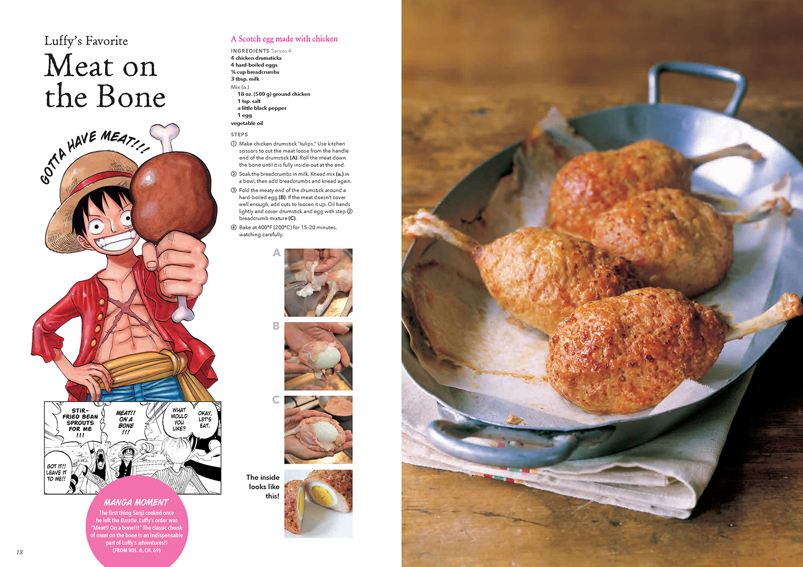

Meat on the Bone

Luffy’s Favorite Meat on the Bone
You can now make Luffy’s favorite treat from the One Piece manga by following a few steps!
Ingredients
Serves 4
- 4 chicken drumsticks
- 4 hardboiled eggs
- 1/4 cup breadcrumbs
- 3 tbsp. milk
Mix (a.)
- 18 oz.(500 g) ground chicken
- 1 tsp. salt
- a little black pepper
- 1 egg
- vegetable oil
- Make chicken drumsticks "tulips". Use kitchen scissors to cut the meat loose from the handle end of the drumstick(A). Roll the meat down the bone until it is fully inside-out at the end.
- Soak the breadcrumbs in milk. Knead mix (a.) in a bowl, then add breadcrumbs and knead again.
- Fold the meaty end of the drumstick around hard-boiled egg(B). If the meat doesn’t cover drumstick and egg with step 2 breadcrumb mixture (C).
- Bake at 400°F(200°C) for 15-20 minutes, watching carefully.